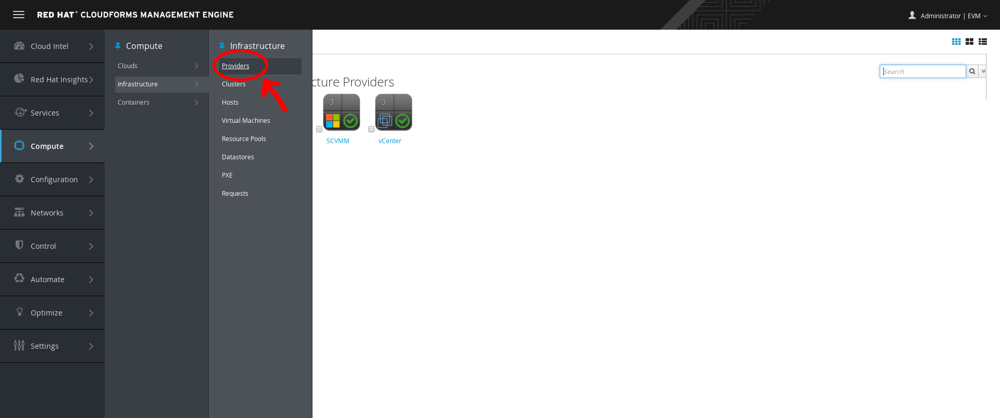
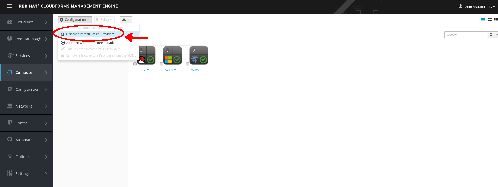
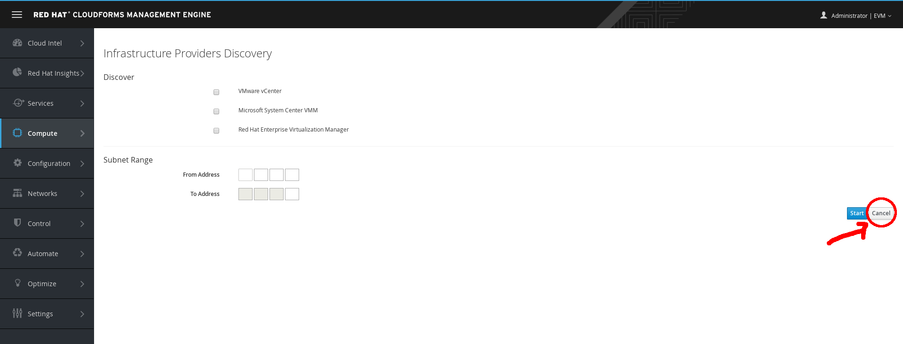
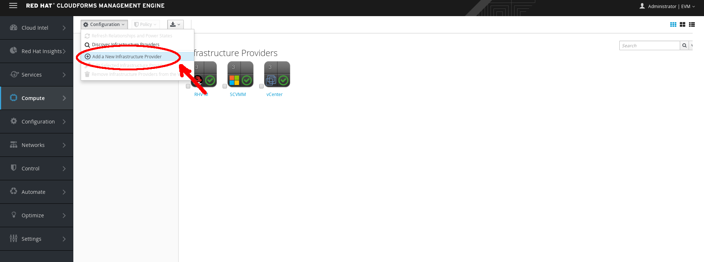
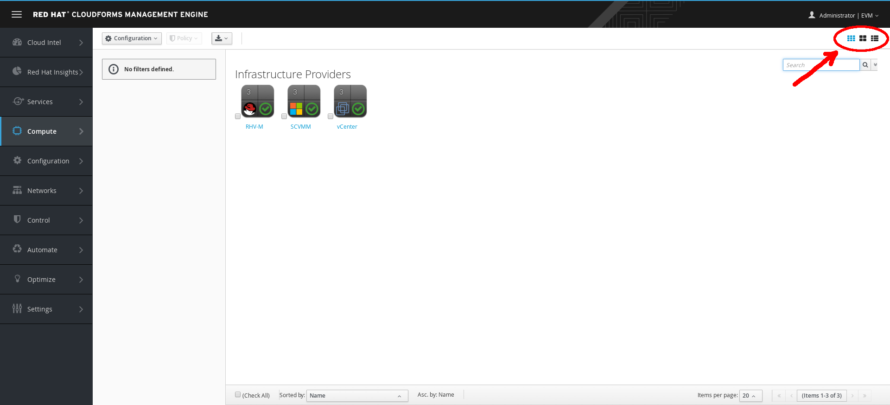
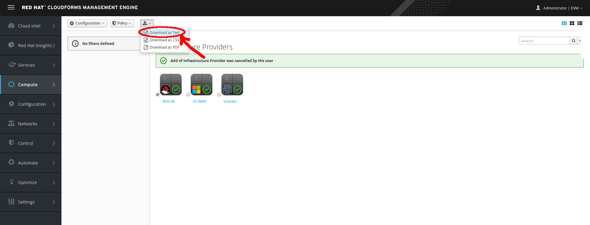
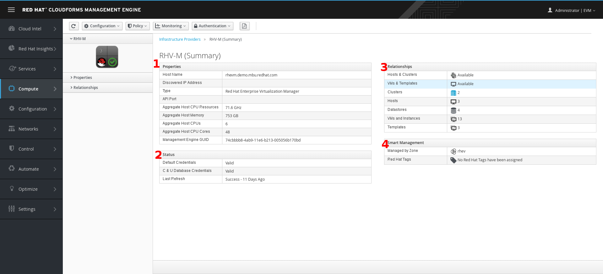

Exercise 1.1: Working with Infrastructure Providers
Exercise Description
Learn to view, search and manage infrastructure providers, in Red Hat CloudForms.
In Red Hat CloudForms, an infrastructure provider is a virtual infrastructure environment that you can add to a Red Hat CloudForms appliance, to manage and interact with the resources, in that environment.
In other words, a infrastructure provider is a management platform for managing virtual machines from a single type of hypervisor. Infrastructure providers supported by CloudForms are Red Hat Enterprise Virtualization Management (RHEV-M), VMware vCenter and Microsoft System Center Virtual Machine Manager (SCVMM).
Section 1: Explore Infrastructure Providers
Step 1: Select Compute → Infrastructure → Providers.

Infrastructure Providers
Step 2: view the list of your data center infrastructure providers, such as VMware vCenter and Red Hat Enterprise Virtualization.
Section 2: Discover Infrastructure Providers
In very large environments, you can discover new infrastructure providers.
Step 1: Click (Configuration), then click (Discover).

Discover Infrastructure Providers
Step 2: Click Cancel to return to the previous screen.

Cancel Discover Infrastructure Providers
Section 3: Add Infrastructure Providers
You can also add infrastructure providers, if known.
Step 1: Click (Configuration), then click (Add).

Add Infrastructure Providers
Step 2: Review the data entry screen, but do not enter any information.
Step 3: Click Cancel to return to the previous screen.

Cancel Add Infrastructure Providers
Section 4: Explore the Virtual Thumbnail for Infrastructure Providers
The web interface uses virtual thumbnails to represent providers. Each thumbnail contains four quadrants by default, which displays basic information about each provider.
Example Virtual Thumbnail
- Number of hosts
- Management system software
- Currently unused
- Authentication status
In the Virtual Thumbnail below, note the . This demo is disconnected from the providers, so if you ever encounter the exclamation point, it indicates the status as not connected.
Disconnected Virtual Thumbnail
When connected to providers, such as in a actual deployment, the is replaced with a .
A (Policy) in the center of the virtual thumbnail indicates that this provider has one or more policies applied. There are no policies configured in this exercise, so the shield does not appear.
Step 1: Toggle views
In the top right corner of the window, click to toggle between Grid, Tile, and List views.

Top Window Navigation Infrastructure Providers
Step 2: Access provider lists
Click (Download) for a list of providers in TXT, CSV, or PDF formats.

Download Infrastructure Providers
Step 3: View provider details
Click any infrastructure provider and observe the following details on the resulting screen:

Infrastructure Providers Dashboard
- The Properties section lists the aggregate host resources for the provider.
- CloudForms can communicate with the provider in the Authentication Status section.
- The Relationships section lists related clusters, hosts, datastores, VMs, and templates for this provider.
- Click these relationships to see the type of information CloudForms gathers from a provider.
- The Smart Management section shows if this provider has any smart tags applied. You learn more about smart tagging later in the lab.